【行者无疆·源洄渝州】重庆十二时辰？这样的行者十二时辰，你喜欢吗？

——我倒要看看你火锅里卖的什么药！
1. 最近有一部的网剧叫作《长安十二时辰》，大体讲述的是主角在上元灯会前在时间的步步紧逼下破开谜题从而阻止破坏阴谋戴罪立功的故事。
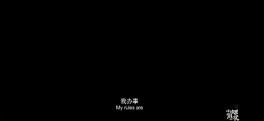
（来源：优酷视频）
2. 随着这部网剧的热播，各地网友也纷纷推出了属于自己家乡的“家乡十二时辰”。
（来源：微博娱Ms）
3. 但其实，对于行者酱来说，一个《重庆十二时辰》还是很容易的，因为一张图就能搞定：
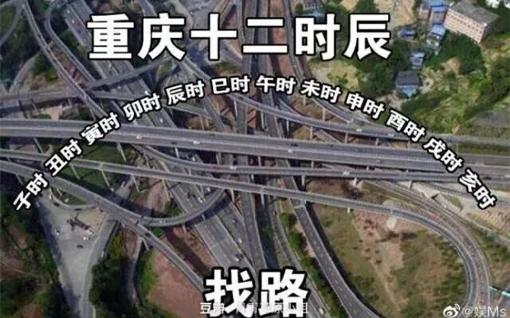
（来源：微博娱Ms）
4. 好了，不开玩笑了。其实重庆的十二时辰还是十分丰富多彩的：
刨去睡觉的四个时辰，
上午不仅可以看王源王俊凯，
下午还能抱着屏幕看冯提莫，
晚上恰口小面还能看陈紫函，
就算是口味变了还能看孟非的非诚勿扰……
1. 但是！我们要说的不是这个！
众所周知，我们是一个 认真负责（熬夜赶路）的文化调研团，所以我们这次去重庆主要包含：
（重庆火锅、万州烤鱼、重庆小面、卤鹅头、毛血旺、豆花饭等等）
停止你的口若悬河（指口水）！我倒要看看你火锅里卖的什么药！
2. 咳咳咳！开始介绍一下巴渝文化了，在很久很久以前，有一群“巫山人”来到了四川盆地东部繁衍生息，在这里，他们建立了远古时期的“巫山大溪文化”。
（图片来源：yaling）
历经了从先秦开始的巴国、巴郡、江州、渝州（队名来源）、恭州，此处在宋朝时改名为“重庆府”，重庆便因此得名。
而在此处的文化也随着朝代的更迭和历史的沉淀逐渐形成了“巴渝文化”，其衣食住行也皆独有一番风味。
3. 历史上的巴渝人民唱跳rap篮球样样精通。
起源于巴渝歌舞的秀山民歌，声振林木，余音满屋。来自上古，曾经在元明清短暂的喑哑无声，又重新在新中国惊起梁尘。
咿呀唱响，无论是传播知识亦或是诉说衷肠，都是秀山人民最好的音腔。
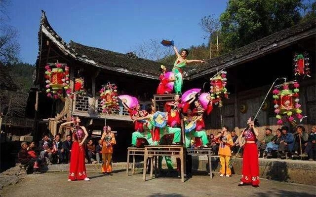
4. 若想寻得渝州中最为梦幻之处，洪崖洞当首屈一指。
漫步于洪崖洞中，就像漫步于千与千寻的世界里。不符合常识的建筑，沿街贩卖的小吃，光怪陆离的市井，俨然在现实中搭建起了一座的汤婆婆油屋。在重庆，这里是最“蒸朋”的地方，也是体验巴渝美食的必经之处。
5. 巴渝饮食喜食麻辣，以不拘一格使用材料创作新菜见长。
万州烤鱼是重庆特色传统名菜，传说为晚清叶家女子韩妈妈发明。一条鱼剖洗净，平放在铁夹中，再放在炉上用木炭烧烤；
待两面烤至金黄后盛到铁盘中，浇上用红油、白糖等秘制底料，一盘秘制的万州烤鱼便做成了。用筷子撕下一小缕烤鱼放入嘴中，当柔嫩的舌尖与焦酥的鱼肉相接，鲜香可口，齿间留香……
相较前者，重庆火锅则已然成为重庆的城市名片。秋日渐湿、冬季阴冷，重庆人便创造了融麻、辣、烫于一炉的祛寒除湿食品火锅。菜品多样、配料独特、吃法豪放，即使是在夏天也让人欲罢不能；也正因如此，在重庆有一种享受叫做开着空调吃火锅。
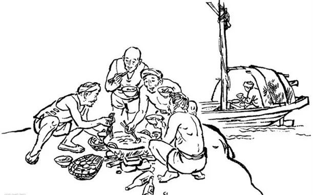
（ 重庆火锅起源于船工纤夫文化）
（更多巴渝文化可在菜单栏查看文化科普汇总）
6. 说到火锅，那就不能不提蒋委员长：
7. 在抗战时期，重庆被南京国民政府选作陪都，首都南京沦陷之后，中央政府迁到重庆继续指挥抗日战争。
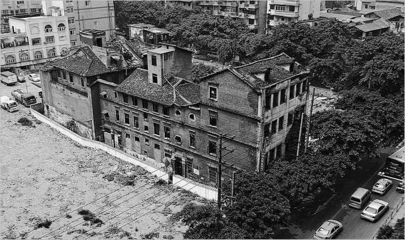
8. 也正是在这个地方，涌现着可歌可泣的史诗和永不消逝的英灵。
在重庆市歌乐山麓的渣滓洞，一座由渣多煤少的小煤矿改建而成的集中营，因为国民党在溃逃前夕策划的震惊中外的大屠杀而知名。
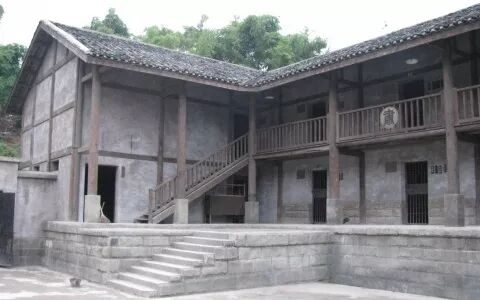
以渣滓洞为原型，这里诞生了《红岩》、《江姐》等可歌可泣的革命英雄故事；而在层层铁丝网里面的，则是真正不屈的信仰：他们为免除下一代苦难，愿把牢底坐穿；面对敌人的严刑拷打，却能迸发出钢铁般的意志。
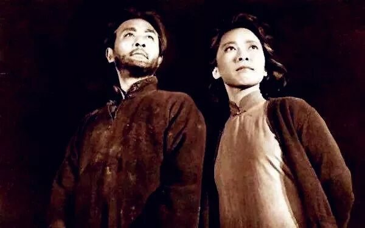
9. 纵观重庆历史，这里有着太多太多的历史人物与事件可以铭记。
既有视死如归的江竹筠，也有共和国十大元帅聂荣臻；既有指挥“中国的敦刻尔克大撤退”的卢作孚，也有着面对蒙古侵略者顽强抗争的刘伯文；既有着重庆谈判这样重要的会议，也有着重庆大轰炸这样惨绝人寰的惨案……
只是我们注意到，这些文化在时间的冲刷下已开始渐渐褪去原先的色彩。
所以…
在3000多年的发展时间里，重庆文化的产生与发生经历了许多不同的阶段。到目前为止，对于该文化的具体内容和分类仍没有确定统一的看法。
西南大学周教授认为：“重庆文化中居于主体地位的是巴渝文化、革命文化、三峡文化、移民文化、抗战文化、统战文化六种形态。”
其中，巴渝文化和革命文化对于重庆而言，扮演着基础文化形态的作用。
两种相隔时间较远的文化，仍相互连接，贯穿始终，在历史长河中孕育发展，对今天的重庆人文精神以及性格特征起着至关重要的作用。
1. 本次调研，团队将主题界定为“巴渝文化和英雄文化对重庆人文精神的影响”。那么从本次实践来看，这两种文化应该是一个怎样的定义呢？
2. 就目前来看，“巴渝文化”是一个新提出的概念，暂时还缺乏普遍共识。有专家认为，“巴渝文化”是居于四川盆地东部，以重庆为中心的广大区域中存在的。
从文化形态上来看，古代巴国、巴族到近代时期的地域历史文化，巴渝文化是巴蜀文化的重要组成部分，是重庆的基础性文化形态。
从文化内涵上观之，其内涵不仅限于古代巴国、巴族、巴郡的历史文化，而是包括了从先秦到明清时期以重庆为中心广大地区的历史文化。
本次调研中，行者们将主要集中在巴渝民俗和文化遗产上来展开此方面的内容的学习认识。
3. 至于英雄文化的定义，需要先说一说革命文化。
重庆的革命文化，有专家定义是指1840年鸦片战争以来在实现中华民族伟大复兴的奋斗历程中，重庆人民勇于追求真理、挺立潮头、坚韧顽强、开放包容，特别是在中国共产党领导下，敢想敢干、不屈不挠、舍生忘死、屡仆屡作，为建立新中国而建立的不朽功绩。
近代以后，革命文化、红色基因更成为这座城市最鲜明的特征，由于这种文化所包含的内容较广且复杂，因此行者们将会把调研内容集中在包括孙中山先生投身民主革命时期、20世纪初的大革命期间以及抗战期间形成的抗战文化上，学习了解红岩精神，以爱国主义为核心的民族精神等。
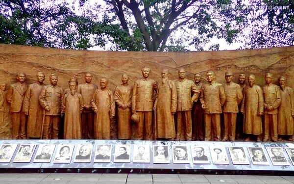
1. 十八大以来曾指出坚定文化自信，是事关国运兴衰、事关文化安全、事关民族精神独立性的大问题。
“以古人之规矩，开自己之生面”，透过优秀传统文化，去习得政治抱负，培养爱国情怀，养成浩然正气，领悟献身精神。
2. 坚定文化自信，唤起民族精神，这是行者无疆团队在长达2年多时间里一直在努力去做的事情；“理想之光不灭，信念之光不灭”，团队相信，探索并传播文化中所代表的精神，是了解同一精神在不同时代的影响，坚定民族自豪感的直接方式。
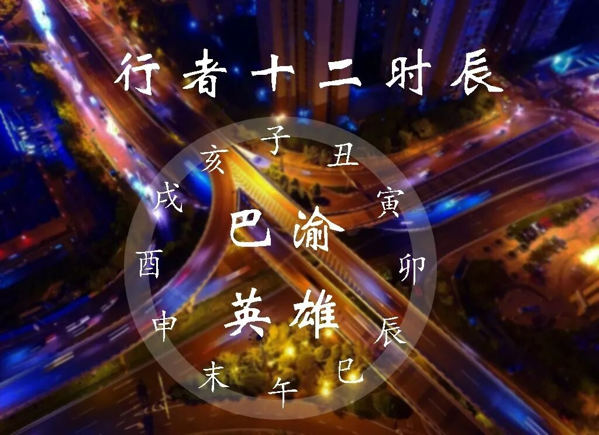
3. 其次，近段时间以来，由于多方面的原因，重庆以飞快的速度成为了新兴的旅游城市。
据报道，今年9月，抖音指数与清华大学国家形象传播研究中心城市品牌研究室联合发布《短视频与城市形象研究白皮书》，从城市形象相关视频的播放量来看，重庆是唯一一个城市形象相关视频播放量过百亿的城市，可称得上是“抖音之城”。
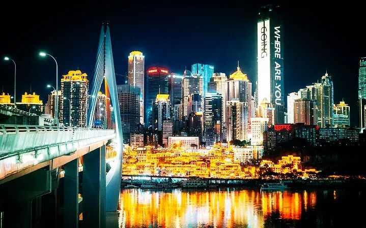
（图片来源：七号旅行日记）
而导致其备受关注的一个重要原因，便是当今“网红”元素向城市的注入。对于城市而言，这样的发展方式更像是一把双刃剑。
不断涌入的外地游客带动城市发展，却也让本地居民深受困扰；特别是对于一些传统文化的轨迹，慢慢被其他呼声所掩盖，渐行渐远。
4. “重庆火了，但是却很单薄。”
曾有一位景区负责人这样评价道，“许多游客往往是冲着魔幻的交通和城市结构而来重庆，他们热热闹闹的去吃了火锅，看了洪崖洞夜景，却并没有真正的体验到老重庆人的一代情怀和深藏在这座城市里面的文化底蕴。”
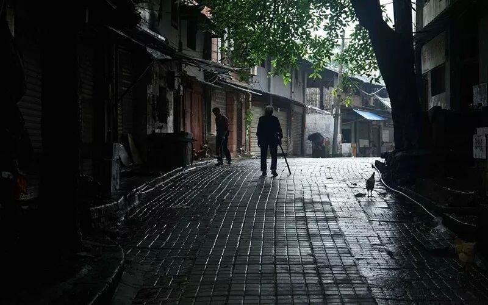
作为当代大学生，我们有责任也有义务，去用自己的实践丈量这座城市，为重庆文化正名，让更多的人了解到重庆的美不止是“人美”，重庆的红不止是“网红”！
1. 本次实践中，团队将结合两种文化的特点——
在民俗和非物质文化遗产中领略巴渝古文化的风采，摸索起源文化的精神；
在革命历史纪念馆和陈列馆中铭记历史，悼念先辈，再一次感受近代英雄文化中的可贵精神。
2. 6天的时间里，团队计划前往城市规划展览馆、巴渝民俗文化村、红岩革命纪念馆、木洞镇和丰盛古镇、建川博物馆、磁器口等地学习文化知识，考察文化现状，传承文化精神。
在提高自身对文化的整体认知把握后，团队将走进本地的大街小巷里，与民众亲切交流，了解他们对两种文化以及其中所蕴藏的精神的认识。
3. 同时，团队也将同相关单位合作共同开展研学活动，向专家了解学习两种文化发展及其对重庆人文精神的影响，探讨我们对文化精神的认识和传承，将文化的建设同时代发展紧密相连，让更多人听到、注意到它们的声音：
思者无域，行者无疆。
4. 在前期准备中，我们发放校园调研问卷、进行调研采访；采集调研地信息、安排实践行程；开展行者讲堂、做好队员培训；采撷文化精华，宣传当地文化……
正如琥珀的晶莹需要万年的等待，佳酿总要陈年，
历经五十余天的沉淀，行者们业已整装待发。
感知：我们的行囊就是智慧
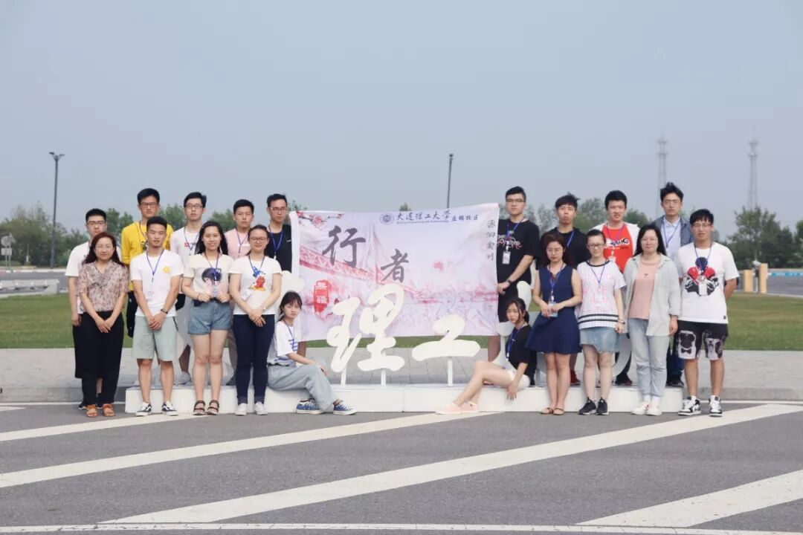
践行：我们的目标就是远方
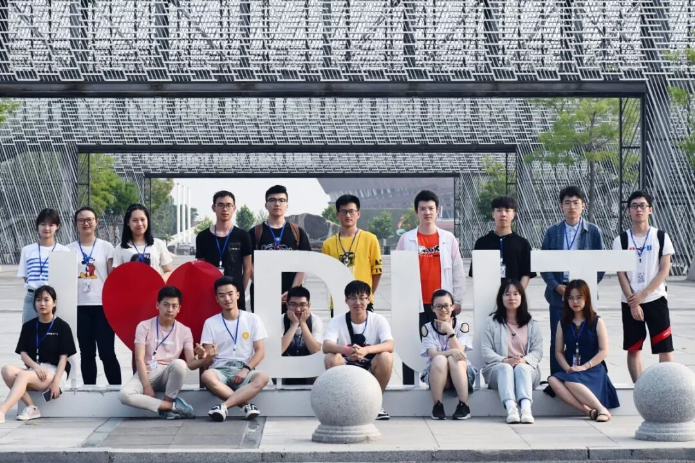
探索：我们的行程就在脚下
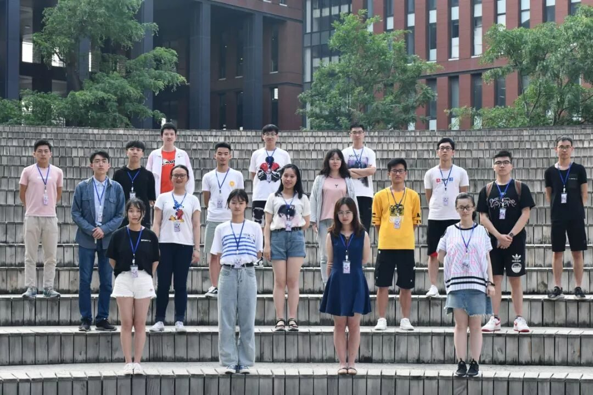
行者无疆，我们从大工启程，
向着远方，向着文化。
@重庆日报
@腾讯大渝网
@新华网
百度百科@万州烤鱼
图片@百度图片
论文@李灵，巴渝传统元素在现代建筑中的表达分析[M]
重庆：重庆大学2013
（如有侵权请联系作者删除）
来源丨行者无疆实践团
文字丨段智然 沈柏宇
排版丨邓子孚
审核丨邓子孚 段智然
行者无疆实践团
QQ：2758025831

随行者一起认识世界
长按二维码关注